Smart Livestock Breed Identification
Harness the power of AI to identify cattle and buffalo breeds instantly. Get expert advisory services, health management tools, and comprehensive breed information.
AI-Powered
Advanced machine learning for accurate breed identification
Expert Validated
All information verified by veterinary professionals
Community Driven
Built for farmers, by agricultural technology experts
Breed Recognition
Loading model...
Predictions
Searches & Info
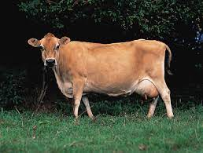
Jersey
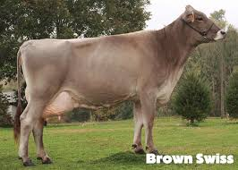
Brown Swiss
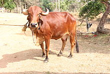
Gir
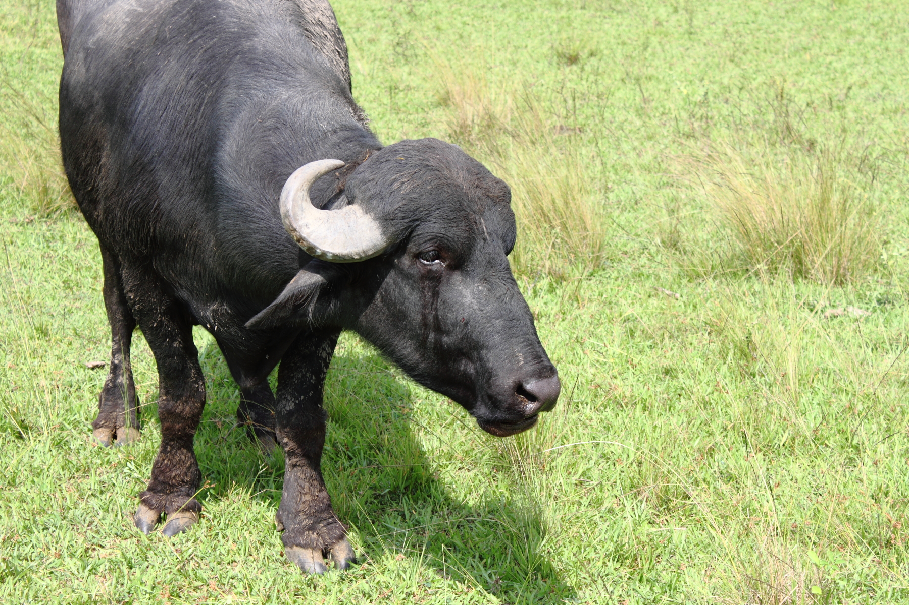
Murrah Buffalo
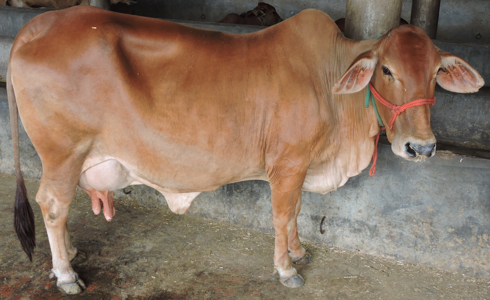
Sahiwal
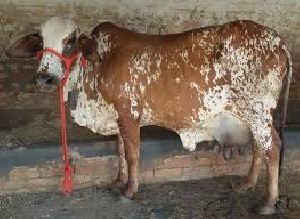
Nimari
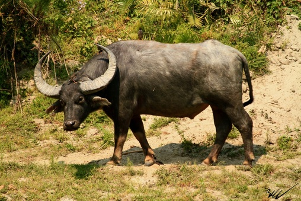
Nagpuri
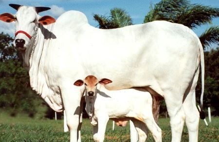
Hariana
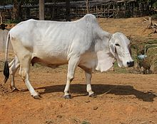
Tharparkar
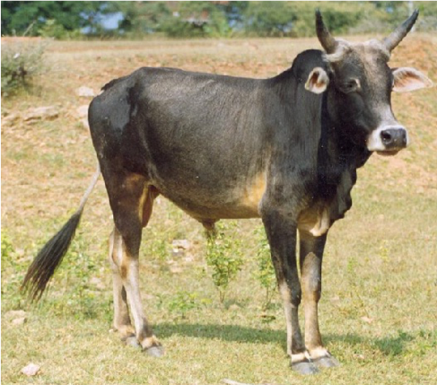
Umblacherry
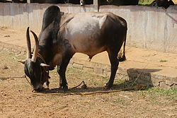
Amritmahal
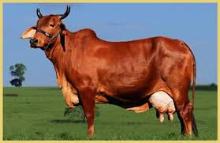
Red Sindhi
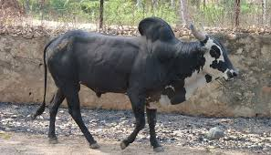
Alambadi
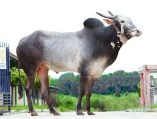
Hallikar
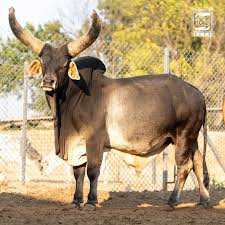
Kankrej
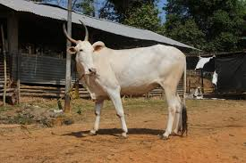
Khillari
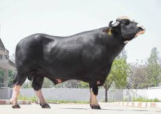
Nili Ravi
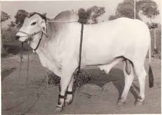
Ongole
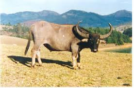
Toda
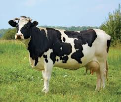
Holstein Friesian
Health & Care
Vaccination Schedule
Regular vaccinations are crucial for preventing common diseases. Consult your local veterinarian for a tailored schedule based on your region and specific breed needs.
- Calves: Initial vaccinations for FMD, HS, BQ at 3-6 months.
- Adults: Annual boosters for FMD, HS, BQ.
- Special cases: Additional vaccines for diseases like Brucellosis, depending on risk.
Common Diseases
Be aware of common diseases affecting cattle and buffalo. Early detection and treatment can prevent severe losses.
- Foot-and-Mouth Disease (FMD): Highly contagious viral disease.
- Haemorrhagic Septicaemia (HS): Bacterial disease, often fatal.
- Black Quarter (BQ): Acute bacterial disease affecting muscles.
- Mastitis: Inflammation of the udder, common in dairy animals.
Nutrition Tips
Proper nutrition is vital for growth, milk production, and overall health. Ensure a balanced diet with adequate roughage, concentrates, and minerals.
- Roughage: Green fodder, hay, silage.
- Concentrates: Grains, oil cakes, and commercial feeds.
- Minerals: Provide mineral mixtures, especially for lactating animals.
- Water: Clean and fresh water should be available at all times.
General Care & Hygiene
Maintaining a clean environment and good hygiene practices can significantly reduce disease incidence and improve animal well-being.
- Shelter: Provide adequate shelter from extreme weather.
- Cleanliness: Regular cleaning of sheds and feeding troughs.
- Grooming: Periodic grooming helps in detecting external parasites and skin issues.
- Waste Management: Proper disposal of animal waste to prevent disease spread.
Feedback
Your feedback helps us improve Breed ID. Share your suggestions, report bugs, or help us enhance our dataset. You can also download locally saved feedback from your breed identification sessions.
About Us
Breed ID was created during the Smart India Hackathon to empower Field Level Workers (FLWs) and farmers with AI-powered livestock breed recognition. Our goal is to make animal husbandry smarter, more efficient, and accessible.
We combine artificial intelligence, veterinary expertise, and community feedback to help rural communities:
- Instantly identify cattle & buffalo breeds using your phone.
- Access reliable health, nutrition, and care guidelines.
- Strengthen breed data through farmer & FLW contributions.
Our vision is to evolve Breed ID into a full digital livestock assistant — offering vaccination reminders, health tracking, and sustainable breeding insights.
"AI meets Agriculture — for healthier herds & happier farmers"